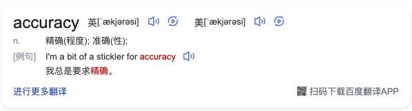
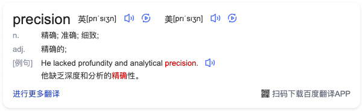
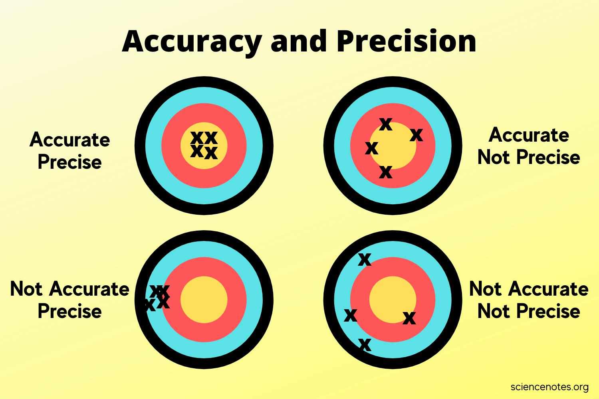

捋一捋 Accuracy 与 Precision 间的区别和联系
Accuracy 和 Precision 是在科学技术领域中经常出现的两个概念，本文将通过一张图来捋一捋二者之间的区别与联系。
为什么容易混淆
以百度翻译为例，我将 accuracy 和 precision 分别作为关键词搜索，得到的结果如下：


两个词的翻译结果中都出现了精确、准确的字样。接着，继续以准确和精确分别作为关键词搜索：
从精确的释义中我们看到了「准确」字样，这也难怪有些文献会把 accuracy 翻译成「准确度」，而有些文献翻译成「精确度」。这样，我们基本可以得到一个结论：中文不存在和 accuracy、precision 含义一一对应的词语。
一图中的

图中有四张靶纸：
| 靶纸位置 | Accurate | Precise | 描述 |
|---|---|---|---|
| 左上 | ✅ | ✅ | 全部命中靶心附近且命中点集中 |
| 右上 | ✅ | ❌ | 命中点的统计中心与靶心较近 |
| 左下 | ❌ | ✅ | 全部偏出靶心，命中点集中，命中点的统计中心与靶心较远 |
| 右下 | ❌ | ❌ | 全部偏出靶心，命中点分散，且命中点统计中心与靶心较远 |
如果将一次射击理解为一次对射手射击水平的测量，那么 accuracy 衡量的是测量值的中心 (如均值) 离真实值的距离，是绝对关系；而 precision 衡量的是多次测量值之间的距离，是相对关系。如果你不排斥概率密度图，可以参考下面这张图：
隐喻
我个人对这四张图有另一种理解 —— 这四张图分别对应着学习的四种状态：
| 靶纸位置 | 学习状态 | 描述 |
|---|---|---|
| 左上 | 出类拔萃 | 掌握核心思想、基本功扎实、拥有丰富且有效的实践经验 |
| 右上 | 学有所成 | 掌握核心思想、基本功扎实，但需要更多的实践锻炼让输出更稳定 |
| 左下 | 误入歧途 | 理解粗浅、基本功薄弱，但参与了很多实践项目 强化了错误的认知和实践方式，可塑性低 |
| 右下 | 初出茅庐 | 一张白纸，尚没有相关知识和实践经验，具有较高的可塑性 |
无论在哪个领域学习，一条高效、系统的学习路径应该是「初出茅庐 → 学有所成 → 出类拔萃」，是否达到出类拔萃取决于你的天赋、热爱和持续投入的程度。但对于像我这样的普通人，只要有热爱，并能持续付出努力，在目标领域达到学有所成并非难事。但如果在学习过程中缺乏对目标领域的敬畏之心，学到一点皮毛便骄傲自满、急于表现，丧失了钻研精神，就容易误入歧途。
例外
在信息检索领域和机器学习的分类问题中，有一种衡量算法性能的指标被命名为 precision。需要格外注意的是，在这两个领域中，precision 的定义与我们上文提到的并不相同，其定义更接近 accuracy，如果你在这个领域深耕多年，希望这篇文章不会扰乱你已经建立好的思维模型 : )。
感谢何希僖帮忙审校